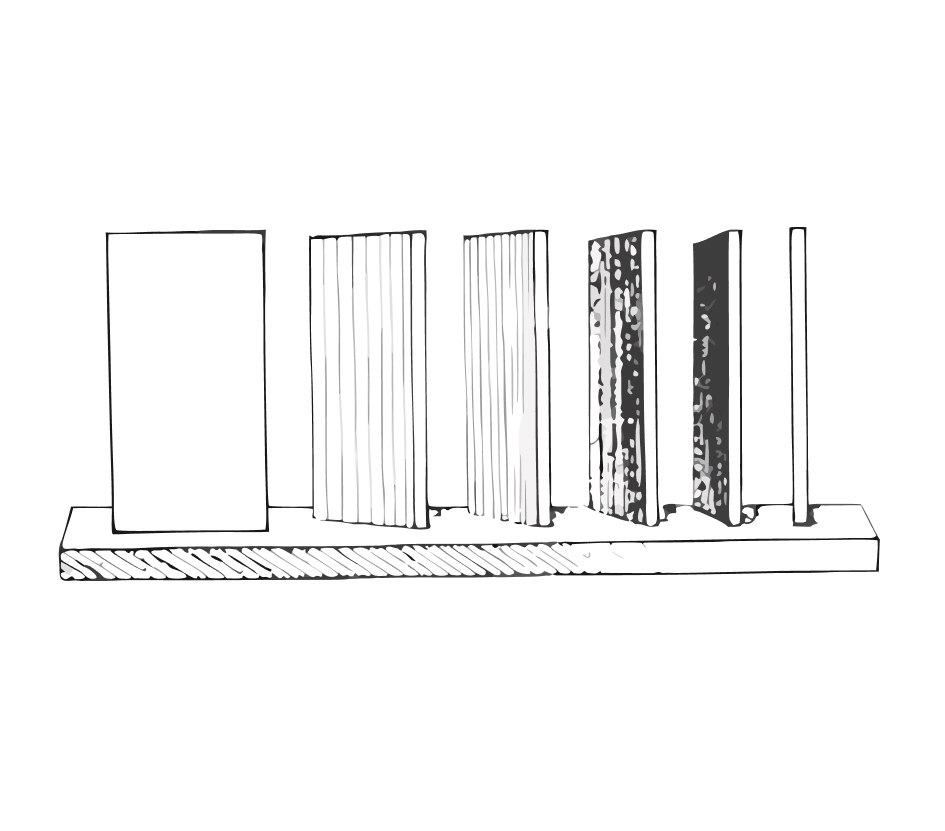

Поверхность освещается сильнее, когда свет падает более перпендикулярно.
Несколько белых картонов ставятся к свету таким образом, чтобы первый из них был перпендикулярен к лучу, а второй, третий и последующие мало-помалу отклонялись бы от него. Последний же картон ставится по направлению луча света. Эта модель весьма ясно показывает постепенность изменения насыщенности теней.